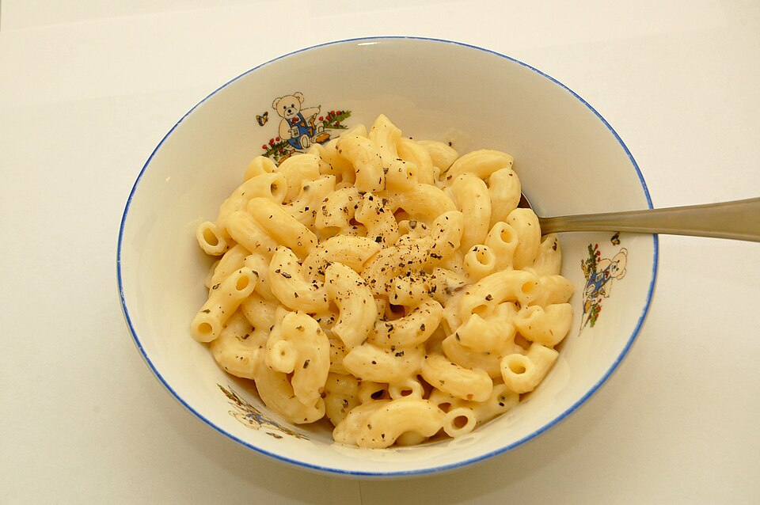

Mac and Cheese

Description
This mac and cheese is rich, creamy, and extra-cheesy — made by building a
classic roux-based cheese sauce and stirring in sharp cheddar so that
every bite is smooth and gooey. It tastes indulgent straight off the stove
and remains creamy even if reheated, making it both a comforting quick
meal and a great make-ahead dish.
Ingredients
- 8 oz. macaroni
- 3 Tbsp butter
- 3 Tbsp all-purpose flour
- 2 cups whole milk
- 1/2 tsp onion powder
- 1/2 tsp garlic powder
- 1/2 tsp paprika
- 3/4 tsp salt
- 1/4 tsp black pepper
- 1/2 tsp hot sauce
- 2+1/2 cups sharp cheddar cheese
Steps
- Gather and prep all ingredients.
-
Boil the macaroni until tender (about 7–8 minutes), then drain and set
aside.
-
Melt the butter with the flour in a pot over medium heat, whisking until
bubbly; continue whisking for one minute.
-
Slowly whisk in the milk a little at a time, letting each addition
thicken before adding more.
-
Keep whisking over medium heat until the sauce gently simmers and
thickens to a heavy-cream consistency.
-
Turn off the heat and whisk in the onion powder, garlic powder, paprika,
salt, pepper, and hot sauce.
-
Add the shredded cheddar a handful at a time, whisking until fully
melted and smooth.
-
Stir in the cooked macaroni until coated; let it thicken slightly as the
pasta absorbs the sauce.
- Serve hot.
Home